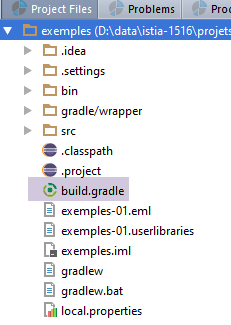
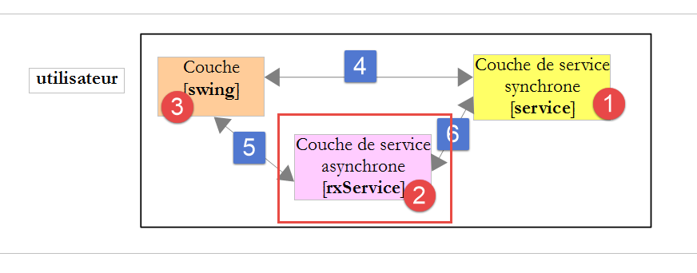
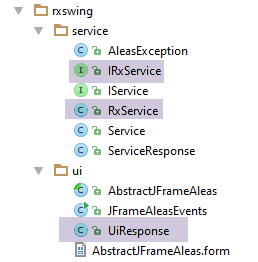
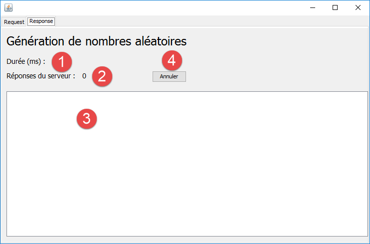
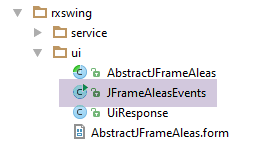

8. Swing 环境中的 RxJava
8.1. 引言
在此，我们将重新审视第 2 节中介绍的 Swing 应用程序。
 |
要在 Swing 环境中使用 RxJava，我们将使用 RxSwing 库，该库为 RxJava 添加了在 Swing 环境中非常有用的类和接口。为此，Swing 示例的 Gradle 文件如下：
 |
buildscript {
repositories {
mavenCentral()
}
}
apply plugin: 'java'
jar {
baseName = 'exemples-01'
version = '0.0.1-SNAPSHOT'
}
repositories {
mavenCentral()
}
dependencies {
compile('io.reactivex:rxswing:0.25.0')
compile('io.reactivex:rxjava:1.1.3')
compile('com.fasterxml.jackson.core:jackson-databind:2.7.3')
}
task wrapper(type: Wrapper) {
gradleVersion = '2.9'
}
- 第 15 行：对 RxSwing 的依赖；
我们将仅使用一个 RxSwing 专用的对象：调度器 [SwingScheduler.getInstance()]，它负责在 Swing 事件循环线程上执行/监听可观察对象。我们将专门利用它来监听在事件循环线程之外运行的可观察对象。让我们回顾一下示例应用程序的架构：

- 异步服务层提供返回可观察对象的方法。我们在事件循环线程以外的线程中执行这些可观察对象。这样，GUI 就能保持响应性，能够对用户输入做出反应。最明显的例子就是允许用户点击 [取消] 按钮来中断耗时过长的异步操作。要实现这一点，GUI 必须被冻结；
- Swing 层需要处理异步操作返回的结果，并利用这些结果更新 GUI。然而，这只能在事件循环线程中进行。为此，这些结果会在调度器 [SwingScheduler.getInstance()] 中被监听；
因此，在 GUI 事件处理代码中，与异步层 [rxService] 的交互采用以下形式：
Observable obs=rxService.doSomething(...).subscribeOn(Schedulers.computation()).observeOn(SwingScheduler.getInstance()) ;
其中调度器 [Schedulers.computation()] 可根据具体用例替换为其他调度器。
建议读者重新阅读第 2 段。现在，读者已具备充分理解该段落所需的知识。
8.2. 代码结构
该代码实现了以下架构：
实现该架构的 IntelliJ IDEA 项目如下：
|
- [rxswing.service] 包实现了同步（IService、Service）和异步（IRxService、RxService）服务层；
- [rxswing.ui] 包实现了 Swing 接口；
8.3. 运行项目
要在 IntelliJ IDEA 中运行该项目，请按照以下步骤操作：
 |
8.4. 同步服务

 |
同步服务层提供了以下 [IService] 接口：
package dvp.rxswing.service;
public interface IService {
// random numbers in the [a,b] interval
// n numbers are generated with n itself a random number in the interval [minCount, maxCount]
// numbers are generated after a delay of milliseconds,
// where [delay] is itself a random number in the interval [minDelay, maxDelay]
public ServiceResponse getAleas(int a, int b, int minCount, int maxCount, int minDelay, int maxDelay);
}
服务响应的 [ServiceResponse] 类型如下：
package dvp.rxswing.service;
import java.util.List;
public class ServiceResponse {
// service waiting time
private int delay;
// random numbers
private List<Integer> aleas;
// execution thread
private String executedOn;
// manufacturers
public ServiceResponse() {
// execution thread
executedOn = Thread.currentThread().getName();
}
public ServiceResponse(int delay, List<Integer> aleas) {
// local builder
this();
// other initializations
this.delay = delay;
this.aleas = aleas;
}
// getters and setters
...
}
[IService] 接口由以下 [Service] 类实现：
package dvp.rxswing.service;
import java.util.*;
public class Service implements IService {
@Override
public ServiceResponse getAleas(int a, int b, int minCount, int maxCount, int minDelay, int maxDelay) {
// random numbers in the [a,b] interval
// n numbers are generated with n itself a random number in the interval [minCount, maxCount]
// numbers are generated after a delay of milliseconds,
// where [delay] is itself a random number in the interval [minDelay, maxDelay]
// some checks
List<String> messages = new ArrayList<>();
int erreur = 0;
if (a < 0) {
messages.add("Le nombre a de l'intervalle [a,b] de génération doit être supérieur à 0");
erreur |= 2;
}
if (a >= b) {
messages.add("Dans l'intervalle [a,b] de génération, on doit avoir a< b");
erreur |= 4;
}
if (minCount < 0) {
messages.add("Le nombre min de l'intervalle [min,count] du nombre de valeurs générées doit être supérieur à 0");
erreur |= 16;
}
if (minCount > maxCount) {
messages.add("Dans l'intervalle [min,count] du nombre de valeurs générées, on doit avoir min<= max");
erreur |= 32;
}
if (minDelay < 0) {
messages.add("Le nombre min de l'intervalle [min,count] du délai d'attente doit être supérieur à 0");
erreur |= 64;
}
if (minCount > maxCount) {
messages.add("Dans l'intervalle [min,count] du délai d'attente, on doit avoir min<= max");
erreur |= 128;
}
if (maxDelay > 5000) {
messages.add("L'attente en millisecondes avant la génération des nombres doit être dans l'intervalle [0,5000]");
erreur |= 256;
}
// mistakes?
if (!messages.isEmpty()) {
throw new AleasException(String.join(" [---] ", messages), erreur);
}
// random number generator
Random random = new Random();
// waiting?
int delay = minDelay + random.nextInt(maxDelay - minDelay + 1);
if (delay > 0) {
try {
Thread.sleep(delay);
} catch (InterruptedException e) {
throw new AleasException(String.format("[%s : %s]", e.getClass().getName(), e.getMessage()), 1024);
}
}
// result generation
int count = minCount + random.nextInt(maxCount - minCount + 1);
List<Integer> nombres = new ArrayList<>();
for (int i = 0; i < count; i++) {
nombres.add(a + random.nextInt(b - a + 1));
}
// return result
return new ServiceResponse(delay,nombres);
}
}
该服务使用的异常类 [AleasException] 如下：
package dvp.rxswing.service;
public class AleasException extends RuntimeException {
private static final long serialVersionUID = 1L;
// error code
private int code;
// manufacturers
public AleasException() {
}
public AleasException(String detailMessage, int code) {
super(detailMessage);
this.code = code;
}
public AleasException(Throwable throwable, int code) {
super(throwable);
this.code = code;
}
public AleasException(String detailMessage, Throwable throwable, int code) {
super(detailMessage, throwable);
this.code = code;
}
// getters and setters
...
}
- 第 3 行：它继承了 [RuntimeException] 类。因此，这是一个未处理的异常；
- 第 7 行：它为其父类添加了一个错误代码（0 表示无错误）；
8.5. 异步服务

 |
异步服务层提供了以下 [IRxService] 接口：
package dvp.rxswing.service;
import dvp.rxswing.ui.UiResponse;
import rx.Observable;
public interface IRxService {
// random numbers in the [a,b] interval
// n numbers are generated with n itself a random number in the interval [minCount, maxCount]
// numbers are generated after a delay of milliseconds,
// where [delay] is itself a random number in the interval [minDelay, maxDelay]
public Observable<UiResponse> getAleas(int a, int b, int minCount, int maxCount, int minDelay, int maxDelay, UiResponse uiResponse);
}
- 第 11 行：该服务的 [getAleas] 方法现在返回一个可观察对象；
[getAleas] 方法返回一个类型为 [UiResponse] 的响应，该响应专用于 [Ui] 层。该类型的定义如下：
package dvp.rxswing.ui;
import dvp.rxswing.service.ServiceResponse;
import java.text.SimpleDateFormat;
import java.util.Calendar;
public class UiResponse {
// customer id
private int idClient;
// service response
private ServiceResponse serviceResponse;
// observation thread name
private String observedOn;
// query time
private String requestAt;
// response time
private String responseAt;
// manufacturers
public UiResponse() {
// observation thread
observedOn = Thread.currentThread().getName();
// query time
requestAt = getTimeStamp();
}
// private methods
private String getTimeStamp() {
return new SimpleDateFormat("hh:mm:ss:SSS").format(Calendar.getInstance().getTime());
}
// getters and setters
...
}
- 随机数位于第 13 行的字段中；
- 其余字段用于指定异步服务可观察对象的执行线程和观察线程，以及向服务发出的请求和收到的响应的时间戳；
该异步接口由以下 [RxService] 类实现：
package dvp.rxswing.service;
import dvp.rxswing.ui.UiResponse;
import rx.Observable;
public class RxService implements IRxService {
// synchronous service
private IService service;
// manufacturer
public RxService(IService service) {
this.service = service;
}
@Override
public Observable<UiResponse> getAleas(int a, int b, int minCount, int maxCount, int minDelay, int maxDelay, UiResponse uiResponse) {
// we create an observable emitting the value rendered by the synchronous service
return Observable.create(subscriber -> {
try {
// synchronous call
uiResponse.setServiceResponse(service.getAleas(a, b, minCount, maxCount, minDelay, maxDelay));
// the result is passed on to the observer
subscriber.onNext(uiResponse);
} catch (Exception e) {
// we pass the error to the observer
subscriber.onError(e);
} finally {
// the observer is informed that the emissions are finished
subscriber.onCompleted();
}
});
}
}
- 第 12–14 行：异步服务的 [RxService] 类由同步接口 [IService] 的实例构建而成；
- 第 20–33 行：构建可观察对象，即 [getAleas] 方法的结果；
- 第 22 行：调用同步方法 [service.getAleas]。其类型为 [ServiceResponse] 的结果被封装在类型为 [UiResponse] 的对象中，以便提供给 [swing] 层。该对象最初作为方法调用参数（第 17 行中的最后一个参数）传入；
- 第 24 行：将 [UiResponse] 发送给观察者（即 [swing] 层）。 [UiResponse] 对象不仅包含第 22 行同步服务生成的信息，还包含第 17 行调用 [getAleas] 方法时生成的其他信息。这就是为什么调用方法将 [UiResponse] 对象作为参数传递给 [getAleas] 方法（第 17 行，最后一个参数）；
- 第 30 行：我们不要忘记通知发射结束。这里有一个可观察对象，它只发射一个值：即同步服务返回的那个值；
- 第 27 行：我们向观察者通知任何错误；
8.6. 图形用户界面

 |
- 图形用户界面是使用 [NetBeans] IDE 构建的，该 IDE 拥有一个功能强大的图形化编辑器。该编辑器生成了 [AbstractJFrameAleas.form] 文件，该文件仅限此 IDE 使用；
- [AbstractJFrameAleas] 类同样由 NetBeans 图形化编辑器生成。随后对其进行了如下重构：我们希望处理的 GUI 事件在 [AbstractJFrameAleas] 类中通过抽象方法进行处理，这些方法由子类 [JFrameAleasEvents] 实现。最终，
- 抽象类 [AbstractJFrameAleas] 负责构建和显示图形用户界面；
- 子类 [JFrameAleasEvents] 负责处理其事件；
[Request] 选项卡的 GUI 组件如下：
 |
编号 | 类型 | 名称 | 角色 |
1 | JTabbedPane | jTabbedPane1 | 一个带标签的容器。包含两个标签页（JPanel）：[jPanelRequest] 用于请求，[jPanelResponse] 用于响应； |
2 | JTextField | jTextFieldNbValues | 向随机数服务发送的请求数量。若异步服务在调度器 [Schedulers.io] 上运行，这些请求将共享一个处理器； |
3 | JTextField | jTextFieldA | 区间 [a,b] 中的端点 a |
4 | JTextField | jTextFieldB | 区间 [a,b] 的端点 b |
5 | JTextField | jTextFieldMinCount | minCount区间 [minCount, maxCount] 的端点 |
6 | JTextField | jTextFieldMaxCount | [minCount, maxCount] 区间的上限 |
7 | JTextField | jTextFieldMinDelay | minDelay 区间 [minDelay, maxDelay] 的下限 |
8 | JTextField | jTextFieldMaxDelay | [minDelay, maxDelay] 区间的 maxDelay 边界 |
9 | JCheckBox | jCheckBoxRxSwing | 如果复选框被选中，则向异步接口发送请求。否则，则向同步接口发送请求 |
10 | JComboBox | jComboBoxSchedulers | 对于异步请求，将使用此处选定的调度器进行执行 |
11 | JButton | jButtonGenerate | 启动对同步或异步服务的请求执行 |
[响应] 选项卡的 GUI 组件如下：
 |
编号 | 类型 | 名称 | 角色 |
1 | JLabel | jLabelDuration | 请求的总执行时间（以毫秒为单位） |
2 | JLabel | jLabelNbResponses | 观察到的响应总数（可能与请求数不同，因为每个请求可能会返回多个待观察的值） |
3 | JList | jListNumbers | 显示已观测（已接收）的值 |
4 | JButton | jButtonCancel | 取消当前正在执行的请求 |
8.7. 图形用户界面的实例化
 |
[JFrameAleasEvents] 类负责处理 GUI 事件，包括对 [Generate] 按钮的点击。这是一个可执行类，运行于以下上下文中：
public class JFrameAleasEvents extends AbstractJFrameAleas {
private static final long serialVersionUID = 1L;
// synchronous generation service
private IService service;
// asynchronous generation service
private IRxService rxService;
// seizures
private int nbRequests;
private int a;
private int b;
private int minDelay;
private int maxDelay;
private int minCount;
private int maxCount;
// error messages
private final String jLabelNbValuesErrorText = "Tapez un nombre entier >=1";
private final String jLabelCountErrorText = "minCount doit être >=0 et maxCount>=minCount ";
private final String jLabelDelayErrorText = "minDelay doit être >=0 et maxDelay>=minDelay et maxDelay<=5000";
private final String jLabelIntervalErrorText = "a doit être >=0 et b>=a ";
// subscriptions to observables
protected List<Subscription> subscriptions = new ArrayList<Subscription>();
// start-end of execution
private long debut;
// mapper jSON
private ObjectMapper jsonMapper;
// answer model
private DefaultListModel<String> model;
// manufacturer
public JFrameAleasEvents() {
// parent
super();
// local
initJFrame();
// services
service = new Service();
rxService = new RxService(service);
// mapper jSON
jsonMapper = new ObjectMapper();
}
private void initJFrame() {
// hide error messages
jLabelCountError.setText("");
jLabelDelayError.setText("");
jLabelIntervalError.setText("");
jLabelNbValuesError.setText("");
// hide texts by default
jTextFieldA.setText("100");
jTextFieldB.setText("200");
jTextFieldMinCount.setText("5");
jTextFieldMaxCount.setText("10");
jTextFieldMinDelay.setText("100");
jTextFieldMaxDelay.setText("500");
jTextFieldNbValeurs.setText("10");
jLabelDuree.setText("");
// answer model
model = new DefaultListModel<>();
jListNumbers.setModel(model);
// number of hearts
System.out.printf("La JVM a détecté [%s] coeurs sur votre machine%n", Runtime.getRuntime().availableProcessors());
}
public static void main(String args[]) {
try {
UIManager.setLookAndFeel(UIManager.getSystemLookAndFeelClassName());
} catch (UnsupportedLookAndFeelException | ClassNotFoundException | InstantiationException
| IllegalAccessException e) {
System.out.println(e);
System.exit(0);
}
/* Create and display the form */
java.awt.EventQueue.invokeLater(() -> {
new JFrameAleasEvents().setVisible(true);
});
}
- 第 1 行：[JFrameAleasEvents] 类继承自 [AbstractJFrameAleas] 类，而 [AbstractJFrameAleas] 类又继承自 Swing 的 [JFrame] 类。因此，[JFrameAleasEvents] 类是一个 Swing 窗口；
- 第 68–75 行：将要执行的 [main] 方法；
- 第 70 行：设置 GUI 的外观和风格；
- 第 79 行：调用 [JFrameAleasEvents] 类的构造函数：GUI 将被构建并初始化。完成后，它会被显示出来；
- 第 34–44 行：构造函数；
- 第 36 行：调用父类构造函数将初始化 GUI。此时，GUI 的外观完全符合开发者的设计，但尚未显示；
- 第 38 行：初始化 GUI 的某些组件；
- 第 40 行：同步服务的实例化；
- 第 41 行：实例化异步服务；
8.8. 同步请求的执行
点击 [Generate] 按钮将触发以下 [doGenerate] 方法的执行：
@Override
protected void doGenerate() {
// saisies valides ?
if (!isPageValid()) {
return;
}
// rx ou pas ?
if (jCheckBoxRxSwing.isSelected()) {
// requêtes asynchrones
doGenerateWithRxService();
} else {
// requêtes synchrones
doGenerateWithService();
}
}
- 第 4–6 行：我们验证用户输入是否有效。关于 [isPageValid] 方法，我们不再赘述，因为它很简单；
- 第 8 行：我们检查 RxSwing 复选框的状态；
- 第 13 行：我们同步执行请求；
[doGenerateWithService] 方法如下：
// synchronous generation
private void doGenerateWithService() {
// start waiting
beginWaiting();
try {
for (int i = 0; i < nbRequests; i++) {
// response preparation
UiResponse uiResponse = new UiResponse();
// customer no
uiResponse.setIdClient(i);
// synchronous call
uiResponse.setServiceResponse(service.getAleas(a, b, minCount, maxCount, minDelay, maxDelay));
// response time
uiResponse.setResponseAt();
// update the JList model with the responses received
model.add(0, jsonMapper.writeValueAsString(uiResponse));
// update number of responses
jLabelNbReponses.setText(String.valueOf(Integer.parseInt(jLabelNbReponses.getText()) + 1));
}
} catch (JsonProcessingException | RuntimeException e) {
JOptionPane.showMessageDialog(this, getInfoForThrowable("L'erreur suivante s'est produite", e), "Informations",
JOptionPane.PLAIN_MESSAGE);
}
// end waiting
endWaiting();
}
- 第 12 行：对随机数生成服务进行同步调用；
- [doGenerateWithService] 方法完全在 Swing 事件循环线程内执行。在该方法执行完毕之前，GUI 不会处理任何新事件。此时 GUI 处于冻结状态。因此，例如第 16 行和第 18 行中的 GUI 更新将永远不会被显示。它们只会显示最终值，且这将在所有请求执行完毕后发生；
[beginWaiting] 方法（第 4 行）如下：
private void beginWaiting() {
// buttons
jButtonGenerate.setVisible(false);
jButtonCancel.setVisible(true);
// wait slider
jTabbedPane1.setCursor(Cursor.getPredefinedCursor(Cursor.WAIT_CURSOR));
jButtonCancel.setCursor(Cursor.getDefaultCursor());
// raz answers
model.clear();
// rx subscriptions
subscriptions.clear();
// the response view is displayed
jTabbedPane1.setSelectedIndex(1);
jLabelNbReponses.setText("0");
jLabelDuree.setText("");
// start of execution
debut = new Date().getTime();
}
- 第 3 行：[Generate] 按钮被隐藏。这会触发一个事件，该事件同样只能在所有请求执行完毕后才执行。不过，我们从未看到它被隐藏，因为 [doGenerateWithService] 方法第 25 行中的 [endWaiting] 方法会将其再次显示；
- 第 13 行：我们选择 [Response] 选项卡以查看响应的到达情况。同样，该事件也仅在所有请求完成后才会执行，届时我们将一次性看到所有响应，而我们原本希望看到它们依次到达；
同步接口显然存在不足。这些不足可以通过异步接口来克服。
8.9. 执行异步请求
执行异步请求的代码如下：
private void doGenerateWithRxService() {
// début attente
beginWaiting();
// on va obtenir les nombres aléatoires sous la forme d'un observable
Observable<UiResponse> observable = Observable.empty();
// Schéduler d'exécution des différents observables
Scheduler[] schedulers = { Schedulers.io(), Schedulers.computation(), Schedulers.newThread(),
Schedulers.trampoline(), Schedulers.immediate() };
Scheduler scheduler = schedulers[jComboBoxSchedulers.getSelectedIndex()];
// configuration des observables
for (int i = 0; i < nbRequests; i++) {
// préparation réponse
UiResponse uiResponse = new UiResponse();
uiResponse.setIdClient(i);
// l'observable est configuré pour s'exécuter sur le schéduler choisi par l'utilisateur
// puis cumul de l'observable obtenu à l'observable du tout
observable = observable.mergeWith(
rxService.getAleas(a, b, minCount, maxCount, minDelay, maxDelay, uiResponse).subscribeOn(scheduler));
}
// observateur
observable = observable.observeOn(SwingScheduler.getInstance());
// pour l'instant, on a juste fait de la configuration
// aucune requête n'a encore été faite au service synchrone de génération des nombres aléatoires
// on s'abonne à l'observable - c'est ce qui va provoquer l'appel au service synchrone de génération des nombres aléatoires
try {
// il n'y a ici qu'un abonnement - le résultat est une souscription
subscriptions.add(observable.subscribe(
// notification d'émission
uiResponse -> {
// on met à jour l'Ui avec la réponse
// ceci est possible car l'observation a lieu dans le thread de l'Ui
updateUi(uiResponse);
} ,
// notification d'erreur
th -> {
// cas d'erreur - on l'affiche
String message = getInfoForThrowable("L'erreur suivante s'est produite", th);
JOptionPane.showMessageDialog(this, message, "Informations", JOptionPane.PLAIN_MESSAGE);
// annulation requêtes
doCancel();
} ,
// notification [onCompleted]
// fin de l'attente
this::endWaiting));
} catch (Throwable th) {
// cas d'exception + générale - on l'affiche
String message = getInfoForThrowable("L'erreur suivante s'est produite", th);
JOptionPane.showMessageDialog(this, message, "Informations", JOptionPane.PLAIN_MESSAGE);
// on annule les requêtes
doCancel();
}
}
- 第 3 行：更新 GUI 以指示正在进行一项可能耗时较长的操作；
- 第 5 行：创建一个空的可观察对象。该可观察对象将由 [Swing] 层进行监听；
- 第 7 行：可能的调度器数组；
- 第 9 行：我们已赋予用户选择查询执行调度器的权限。此处获取用户所选的调度器；
- 第 11–19 行：每个请求返回一个可观察对象，其元素会被合并（mergeWith）（第 17 行）到第 5 行创建的可观察对象中；
- 第 13–14 行：构建 [UiResponse] 对象。请注意，该对象既是 [RxService.getAleas] 方法的输入参数，也是其返回结果（第 17–18 行）；
- 第 14 行：每个请求都通过一个编号进行标识，此处称为 [idClient]。这是必要的，因为在异步环境中，响应的接收顺序可能与请求的发送顺序不同。[idClient] 使我们能够确定响应属于哪个请求；
- 第 17–18 行：通过 [rxService.getRandom] 发起异步请求。该请求将在用户选择的调度器上执行。其结果（类型为 Observable<UiResponse>）与第 5 行的可观察对象进行组合。需要注意的是，[rxService.getAleas] 方法在此处被执行并返回一个可观察对象。 但这并不意味着随机数已被生成。实际上，可观察对象只有在被订阅时才会执行。目前尚未发生这种情况；
- 第 21 行：这是关键指令：我们指定第 5 行可观察对象发出的元素应在 UI 线程上进行观察。此处我们使用了 RxSwing 库特有的调度器；
- 第 25–51 行：我们订阅第 5 行中的可观察对象。此时才会向生成随机数的同步服务请求随机数。关键部分在于第 29–33 行的指令。其余部分主要处理错误情况以及来自可观察对象的 [onCompleted] 通知；
- 第 28–44 行：请记住，我们要求在 UI 线程上观察第 5 行中的进程。因此，第 28–44 行的代码在 UI 线程上运行；
- 第 29–33 行：我们处理可观察对象的 [onNext] 通知。我们接收由被观察进程发出的 [UiResponse] 类型数据。这是某个异步请求的结果。我们使用此响应更新用户界面；
- 第 34–41 行：我们处理可观察对象的 [onError] 通知。我们显示一个显示错误的对话框（第 37–38 行），然后取消请求（第 40 行）；
- 第 42–44 行：处理可观察对象的 [onCompleted] 通知。更新 GUI 以显示所请求的服务已完成。第 44 行也可以如下编写
在此，我们选择使用方法引用；
- 第 45–51 行：某些异常不会经过第 34–41 行。这种情况发生在请求过多时。一旦超过某个阈值（该阈值取决于运行时环境），就会引发 [StackOverflowError]，该异常由第 45–51 行处理；
- 第 27 行：订阅会生成一个 [Subscription] 类型的对象，并将其添加到订阅列表中。在此处，该列表仅包含一个元素；
第 32 行：我们使用以下 [updateUi] 方法更新用户界面：
private void updateUi(UiResponse uiResponse) {
// response time
uiResponse.setResponseAt();
// observation thread
uiResponse.setObservedOn();
// number of responses
jLabelNbReponses.setText(String.valueOf(Integer.parseInt(jLabelNbReponses.getText()) + 1));
// running time
jLabelDuree.setText(String.valueOf(new Date().getTime() - debut));
// add the jSON response string to the JList response template
try {
model.add(0, jsonMapper.writeValueAsString(uiResponse));
} catch (JsonProcessingException e) {
e.printStackTrace();
}
}
这里我们可以看到图形用户界面的组件被更新了（第 7、9、12 行）。要实现这一点，你必须位于 UI 线程（事件循环）中。
[endWaiting] 方法如下：
private void endWaiting() {
// generate] button visible
jButtonGenerate.setVisible(true);
// hidden [Cancel] button
jButtonCancel.setVisible(false);
// hidden wait cursor
jTabbedPane1.setCursor(Cursor.getDefaultCursor());
// selected answers tab
jTabbedPane1.setSelectedIndex(1);
// duration updated one last time
jLabelDuree.setText(String.valueOf(new Date().getTime() - debut));
}
当异步请求执行过程中发生错误，或用户点击 [取消] 按钮时，会调用 [doCancel] 方法。其代码如下：
// les souscriptions aux observables
private List<Subscription> subscriptions = new ArrayList<Subscription>();
....
@Override
protected void doCancel() {
// fin attente
endWaiting();
// dans le cas de souscriptions
if (jCheckBoxRxSwing.isSelected() && subscriptions != null) {
subscriptions.forEach(Subscription::unsubscribe);
//subscriptions.forEach(s -> s.unsubscribe());
}
}
- 第 2 行：[subscriptions] 是一个订阅列表；
- 第 11 行：所有订阅均被取消；
- 第 12 行：第 11 行的另一种写法。此处的 [forEach] 方法期望接收一个 Consumer<Subscription> 类型的实例（参见第 4.4 节）；
让我们回到 [doGenerateWithService] 方法的代码：它可以分解为两个步骤：
- 可观察对象配置步骤。此操作在 [doGenerateWithService] 方法的调用者线程中进行，即 UI 线程；
- 订阅操作，该操作将触发可观察对象的执行；
如果可观察对象使用了 [Schedulers.computation()、Scheduler.io()、Schedulers.newThread()] 中的任一调度器，则它们将在 UI 线程之外执行。这些不同的线程将争夺机器的核心资源。 由于请求属于长时间运行的操作（数百毫秒），在 UI 线程中执行的 [doGenerateWithService] 方法将在请求返回响应之前完成。然而，该方法是在 [Generate] 按钮的点击事件上执行的。一旦该事件处理完毕，UI 线程便能继续处理后续事件。 此类事件有多个。因此，[beginWaiting] 方法已设置了多个：
private void beginWaiting() {
// buttons
jButtonGenerate.setVisible(false);
jButtonCancel.setVisible(true);
// waiting cursor
jTabbedPane1.setCursor(Cursor.getPredefinedCursor(Cursor.WAIT_CURSOR));
jButtonCancel.setCursor(Cursor.getDefaultCursor());
// raz answers
model.clear();
// rx subscriptions
subscriptions.clear();
// the response view is displayed
jTabbedPane1.setSelectedIndex(1);
jLabelNbReponses.setText("0");
jLabelDuree.setText("");
// start of execution
debut = new Date().getTime();
}
这段代码的几乎每一行都会影响图形用户界面。更新并非立即发生：事件会被放入事件循环队列中。一旦处理完 [Generate] 按钮的点击事件，这些事件就会依次执行，用户便能看到图形用户界面的变化：
- 显示 [Response] 选项卡（第 13 行），并为其关联加载指示器（第 6 行）
- 其 [Cancel] 按钮显示出来（第 4 行），用户可以点击它；
- 响应的 JList 被清空（第 9 行）；
- 显示响应数量的 JLabel 显示 0；
- 显示执行时间的 JLabel 显示空字符串；
在查询执行过程中，UI线程可以定期访问处理器，从而处理待处理事件。其中包括由[updateUi]方法设置的事件：
private void updateUi(UiResponse uiResponse) {
// response time
uiResponse.setResponseAt();
// observation thread
uiResponse.setObservedOn();
// number of responses
jLabelNbReponses.setText(String.valueOf(Integer.parseInt(jLabelNbReponses.getText()) + 1));
// running time
jLabelDuree.setText(String.valueOf(new Date().getTime() - debut));
// add the jSON response string to the JList response template
try {
model.add(0, jsonMapper.writeValueAsString(uiResponse));
} catch (JsonProcessingException e) {
e.printStackTrace();
}
}
当 UI 线程处于活动状态时：
- 显示响应数量的 JLabel 被更新（第 7 行）；
- 显示执行时间的 JLabel 被更新（第 9 行）；
- 通过其模型更新响应的 JList（第 12 行）；
这使得用户能够查看查询执行的进度。此外，用户还可以通过 [Cancel] 按钮取消查询。这正是将异步服务置于 [Swing] 层前端的核心意义所在，而 RxJava 则是实现这一功能的首选技术。
最后需要注意的是，如果用户选择了 [Schedulers.immediate()] 或 [Schedulers.trampoline()] 中的任一调度器，则可观察对象将在与调用者相同的主线程（即 UI 线程）上执行。这将导致同步行为。